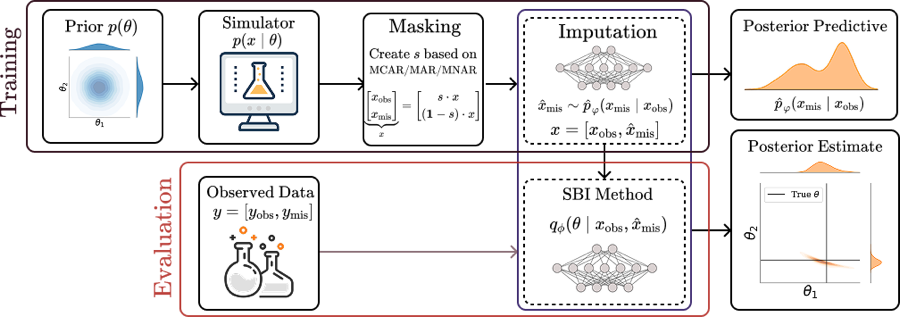
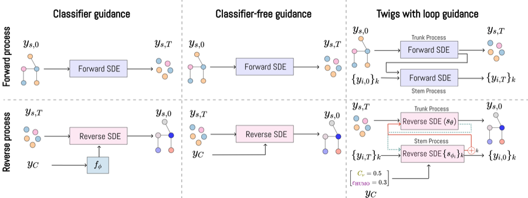
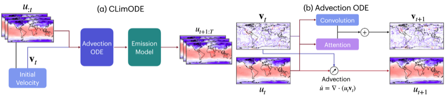
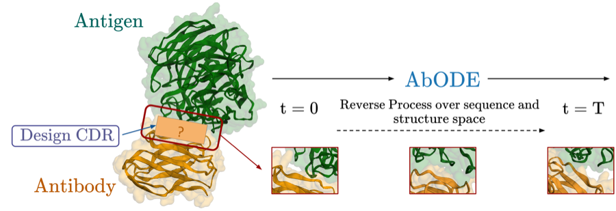
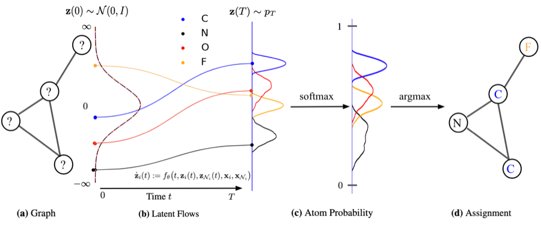

Publications
Yogesh Verma, Dani Korpela, Harri Lähdesmäki, Vikas Garg
NeurIPS 2026
FlexFlow extends discrete flow matching for biological sequences with a structured coupling that biases the source distribution toward biologically plausible regions, and a latent edit-based rate parameterization for variable-length generation. Latent classifier-free guidance and Dirichlet-prior temperature scaling give fine-grained, test-time control, achieving state-of-the-art results on density estimation, DNA sequence generation, and peptide design.
Yogesh Verma, Amauri H. Souza, Vikas Garg
ICML 2025
Message-passing GNNs struggle to capture global structure such as connectivity and cycles. We theoretically compare two common enhancements, positional encodings (PE) and persistent homology (PH), showing that each has unique strengths and limitations. Building on this, we propose PiPE, which combines both, is provably more expressive, and achieves strong results across diverse graph learning tasks.

| Paper | OpenReview | Code |
Yogesh Verma, Ayush Bharti, Vikas Garg
ICLR 2025
We study the robustness of neural posterior estimation (NPE) in simulation-based inference when observations are missing, and are the first to identify the bias that missing data introduces into these methods. We propose RISE, which makes NPE robust to missing data, achieving state-of-the-art performance and more reliable inference.
Alexandru Dumitrescu, Dani Korpela, Markus Heinonen, Yogesh Verma, Valerii Iakovlev, Vikas Garg, Harri Lähdesmäki
ICLR 2025
Existing molecule generative models inherently disregard chirality, a geometric property critical to drug safety and efficacy. We propose a field-based representation with reference rotations that relaxes strict rotational symmetry, capturing all molecular geometries including chirality while matching E(3)-equivariant models on standard benchmarks.

| Paper | OpenReview | Code |
Yogesh Verma*, Giangiacomo Mercatali*, André Freitas, Vikas Garg
NeurIPS 2024
We propose a hierarchical score-based diffusion framework in which a trunk process and stem processes for properties co-evolve through loop guidance, enabling conditional generation of molecules with finer control over their properties and state-of-the-art performance.
Yogesh Verma, Amauri H. Souza, Vikas Garg
ICML 2024
We introduce TopNets, a broad framework that unifies methods at the intersection of GNNs/TNNs and persistent homology, such as (generalizations of) RePHINE and TOGL, and extends naturally to geometric complexes. We show that PH descriptors provably enhance the expressivity of simplicial message-passing networks, and TopNets perform strongly across diverse tasks.

| Paper | OpenReview | Code | Website |
Yogesh Verma, Markus Heinonen, Vikas Garg
ICLR 2024 (Oral, Top 1%)
ClimODE is a spatiotemporal continuous-time process implementing the principle of advection from statistical mechanics. It models weather evolution with value-conserving dynamics, learns global weather transport as a neural flow, and estimates predictive uncertainty, outperforming data-driven methods in global and regional forecasting with an order of magnitude fewer parameters.

| Paper |
Yogesh Verma, Markus Heinonen, Vikas Garg
ICML 2023
AbODE is a generative model that extends graph PDEs to accommodate contextual information and external interactions. It uses a single round of full-shot decoding with continuous differential attention that evolves with latent interactions within the antibody and with the antigen, significantly outperforming existing methods across benchmarks.

| Paper |
Yogesh Verma, Samuel Kaski, Markus Heinonen, Vikas Garg
NeurIPS 2022
We propose continuous normalizing E(3)-equivariant flows built on a system of node ODEs that repeatedly reconcile local toward globally aligned densities. The models can be cast as message-passing temporal networks and perform strongly on density estimation and molecular generation.
Other Publications & Preprints
- Yogesh Verma, Manish Aggarwal, Vikas Joshi, Anil Sharma. "Characterization Study of a Button BPM with an Approach to Automated Measurements", IBIC 2020. [Paper]
- Yogesh Verma, Satyajit Jena. "Particle Track Reconstruction using Geometric Deep Learning", preprint. [arXiv]
- Yogesh Verma, Satyajit Jena. "Jet Characterization in Heavy Ion Collisions by QCD-Aware Graph Neural Networks", preprint. [arXiv]
- Yogesh Verma, Satyajit Jena. "Shower Identification in Calorimeter using Deep Learning", preprint. [arXiv]
Workshops
- Yogesh Verma, Markus Heinonen, Vikas Garg. "AbODE: Ab initio Antibody Design using Conjoined ODEs", New Frontiers in Learning, Control, and Dynamical Systems, ICML 2023.
- Yogesh Verma, Samuel Kaski, Markus Heinonen, Vikas Garg. "Modular Flows: Differential Molecular Generation", Symbiosis of Deep Learning and Differential Equations, NeurIPS 2022.
- Yogesh Verma, Samuel Kaski, Markus Heinonen, Vikas Garg. "Modular Flows: Differential Molecular Generation", New Frontiers in Graph Learning, NeurIPS 2022.
* denotes equal contribution. Full list on Google Scholar.